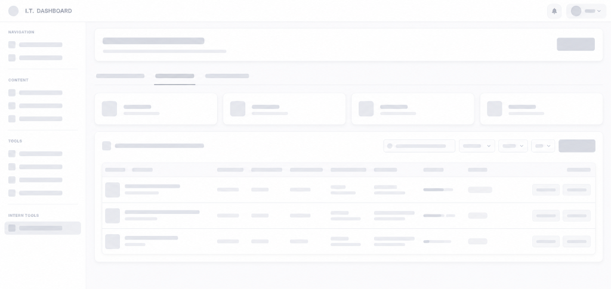

Start Your Experience.
Build What Comes Next.
Gain real-world experience, develop professional skills, collaborate with a dedicated team, and prepare for your next career opportunity through the NCLEX Amplified Internship and OJT Program.
Shift Attendance Logs
Live Daily Time Record Tracker
| Date | Time In | Time Out | Rendered | Supervisor |
|---|
Certificate Creator
Type your name below to preview your test certificate in real time, then download your high-resolution copy.

More than an OJT requirement — a launchpad for your career.
When student internships are structured with dedicated mentorship and practical responsibility:
Real Experience
Gain direct exposure to active organizational projects, professional review center operations, and industry-standard workflows.
Professional Growth
Develop communication, cross-functional collaboration, critical thinking, ownership, and workplace leadership skills.
Career Ready
Graduate with a tangible portfolio of work, verified training hours, and validated professional recommendations.


NCLEX Amplified empowers interns with practical skills designed for real-world career success.
Everything You Need to Know
Navigate through the complete program framework — from what you'll learn, to the curriculum, departments, your journey, and available tracks.
Learn
Understand professional workflows, industry methodologies, and review center operations through structured guidance and team onboarding.
Contribute
Participate in meaningful tasks, department initiatives, and live organizational activities with direct responsibility and guidance.
Collaborate
Work closely with experienced professionals and ambitious fellow interns across diverse disciplines in an open, feedback-driven setting.
Grow
Build confidence, expand your portfolio of work, sharpen your problem-solving capabilities, and establish lasting career readiness.
Orientation & Foundations
Company orientation, IT policies, ethical conduct, development environment & tooling setup, and web development fundamentals review.
Core Competencies
Key Deliverables
- Workstation environment configuration & toolchain installation
- Git & GitHub repository workflow setup
- Corporate IT ethics & data compliance sign-off
- Baseline code review & development standards alignment
Apply & Orientation
Submit application, complete orientation, and get aligned with your internship supervisor & team.
Connect & Mentorship
Pair with department leads, review project roadmap, and set clear 500-hour learning objectives.
Technical Experience
Build real web applications, participate in code reviews, and handle live technical operations.
Skill Growth & Review
Evaluate technical progress, receive supervisor feedback, and refine your portfolio deliverables.
Program Graduation
Complete required OJT hours, receive your official certificate, and step into your tech career!
What Our Interns Say
Hear from students and OJT graduates who gained real-world professional experience and built their career foundations at NCLEX Amplified.
"I would like to express my sincere gratitude to NCLEX Amplified for the opportunity to intern during my college years. This experience provided invaluable exposure to the IT industry, offering deep insights into corporate operations and significantly enhancing my professional skill set."
"As a software and web developer intern, I was given real responsibility on student portal improvements, web features, and system integrations. The mentors guided me through modern production engineering standards."
"The team provided structured mentorship and practical technical tasks that directly aligned with my engineering curriculum. I learned how systems operate at scale and built lasting confidence in professional workplace collaboration."
What You Need to Apply.
A verified checklist for students, interns, and academic OJT applicants.
Accepted Degree Programs
Exclusively open to currently enrolled undergraduate students seeking required academic OJT or practicum course credits:
- BS Information Technology (BSIT)
- BS Computer Science (BSCS)
School Endorsement
Official academic clearance issued by your college or university:
- Official Recommendation / Endorsement Letter
- Signed by OJT Coordinator or Department Chair
Required Documents
Complete applicant verification dossier ready for submission:
- Updated Resume / Curriculum Vitae (PDF)
- Valid Student ID & MOA template (if required)
Availability & Commitment
Professional attendance and collaborative commitment during OJT:
- Flexible schedule (200 to 600 hours aligned with school)
- Active participation in department review meetings
Accredited Certificate of Completion
All verified interns who complete their required academic OJT hours are awarded an official, signed, and university-accredited Certificate of Completion.
Frequently Asked Questions
Answers to common questions regarding the NCLEX Amplified Internship Program.
This program is open exclusively to BS Information Technology (BSIT) and BS Computer Science (BSCS) undergraduate students needing to complete their required school OJT or practicum curriculum credits.
Yes. Our internship program is specifically designed to accommodate official university OJT and practicum curriculum requirements. We provide complete documentation including Certificates of Completion, formal evaluations, and attendance tracking required by your school.
We accept interns across seven dedicated departments: Marketing, Technology (Web & Systems), Creative (Visual Design & Multimedia), Operations, Administration, Content (Educational & Research), and Events Management.
Applicants need an updated Resume/CV, an official School Endorsement / Recommendation Letter from your dean or coordinator, a copy of your valid student ID, and your school's MOA template if required.
The internship duration is flexible to align directly with your school's prescribed hours (typically 200 to 600 hours). Working schedules are structured during onboarding to ensure you meet your academic timeline.
Click the "Apply Now" button on this page to open the application portal. Fill in your personal details, select your university and desired department, upload your resume, and submit.